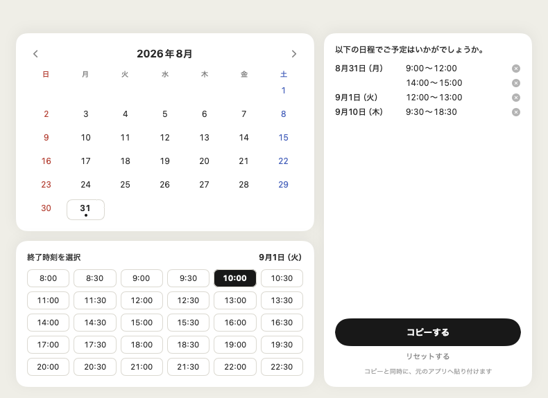
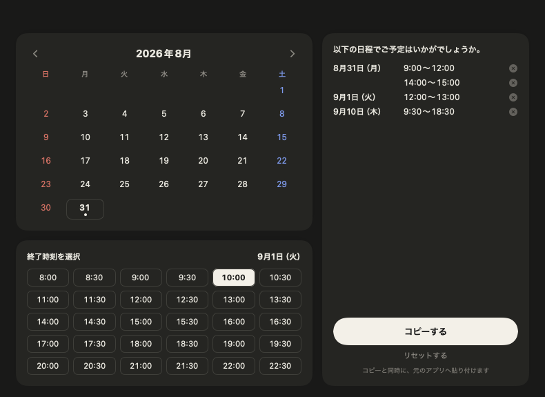

候補日時をサッと選んで、そのまま送れる文面に。
メールでもSlackでも、入力中に ⌃⌘N を押すだけ。
macOS 13 Ventura 以降・無料・オープンソース


以下の日程でご予定はいかがでしょうか。 8月31日（月） 9:00〜12:00,14:00〜15:00 9月1日（火） 12:00〜13:00 9月10日（木） 9:30〜18:30
テキスト入力欄にフォーカスがある時だけホットキーが発動。それ以外の⌃⌘Nはアプリにそのまま渡すので、他のショートカットを邪魔しません。
曜日つき・日ごとに改行・同じ日の複数時間帯は「,」区切り。冒頭のあいさつ文も自動で入ります。
開いた瞬間に今日の月が表示。ライト/ダークモードにも自動で追従します。
処理はMacの中だけで完結。ネットワーク通信は一切行いません。ホットキーの変更やログイン時の自動起動も設定できます。
初回起動時にアクセシビリティの許可が必要です（ホットキー検知と自動貼り付けに使用）
ターミナルからの1行インストールが手軽です（ダウンロード〜起動まで自動）:
curl -fsSL https://raw.githubusercontent.com/takumitakatani/nittei-okurukun/main/scripts/install.sh | zsh
zipから手動でインストールした場合、無署名アプリのため初回起動がブロックされることがあります。 システム設定 → プライバシーとセキュリティ → 「このまま開く」で起動できます。